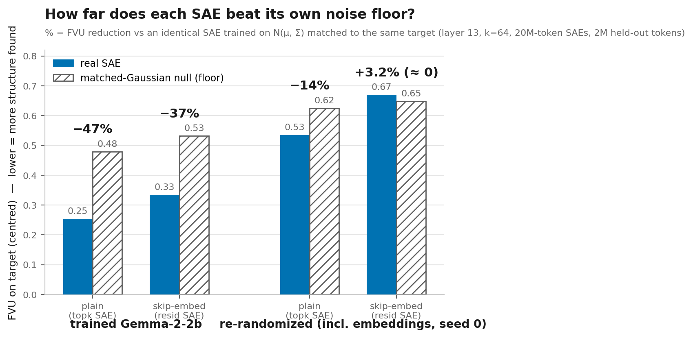
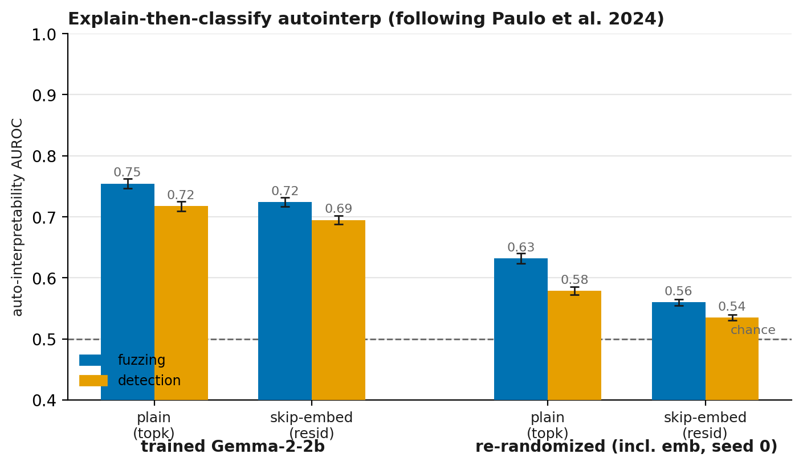
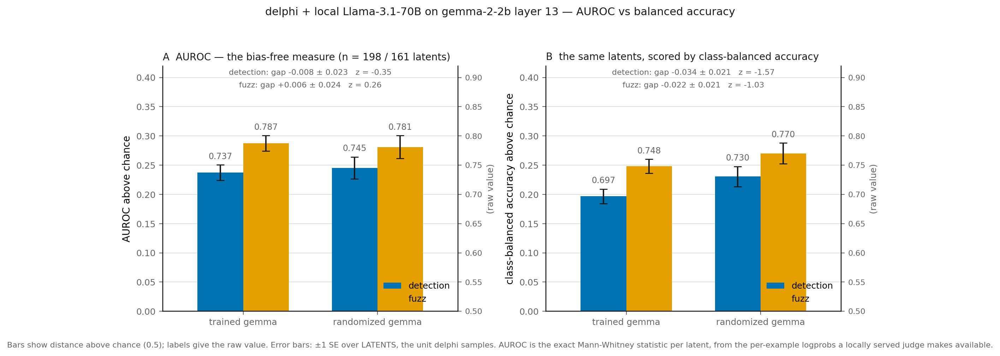
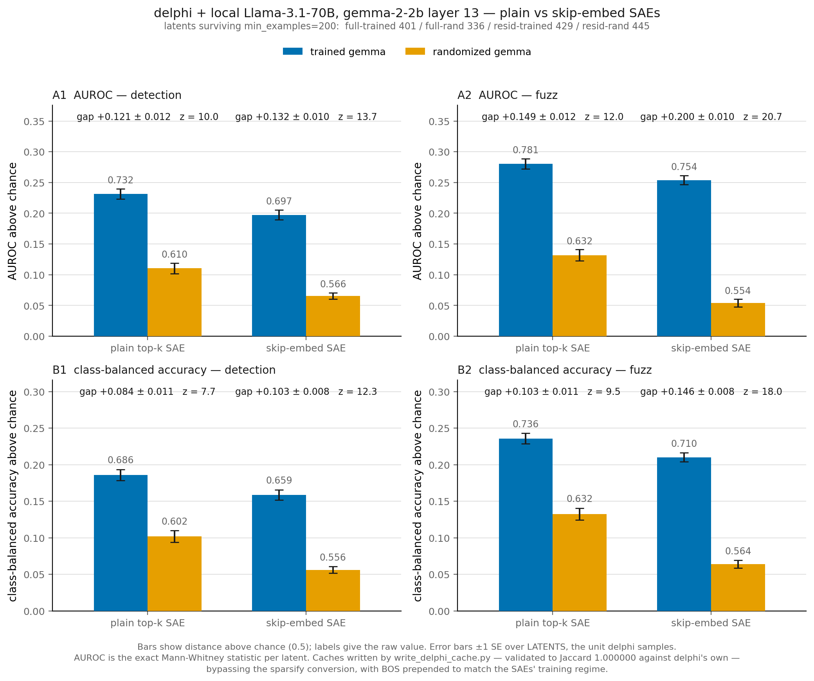
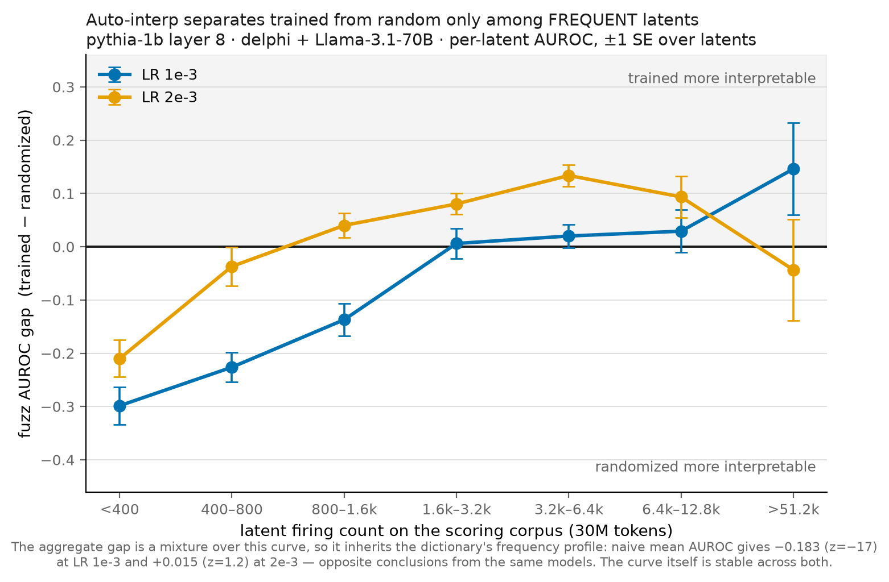
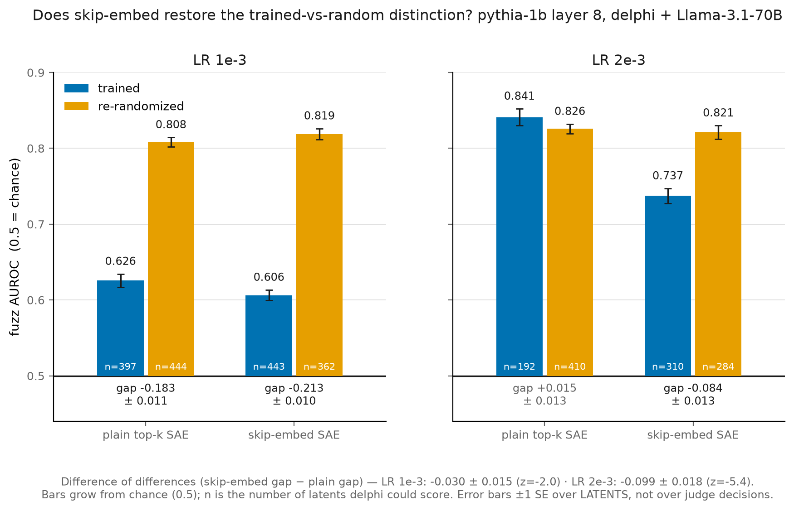
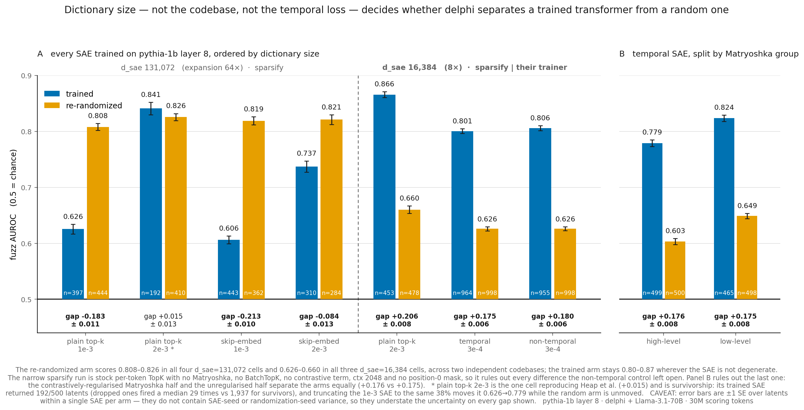
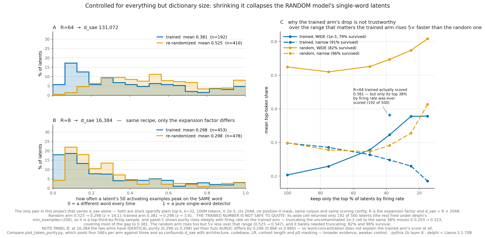
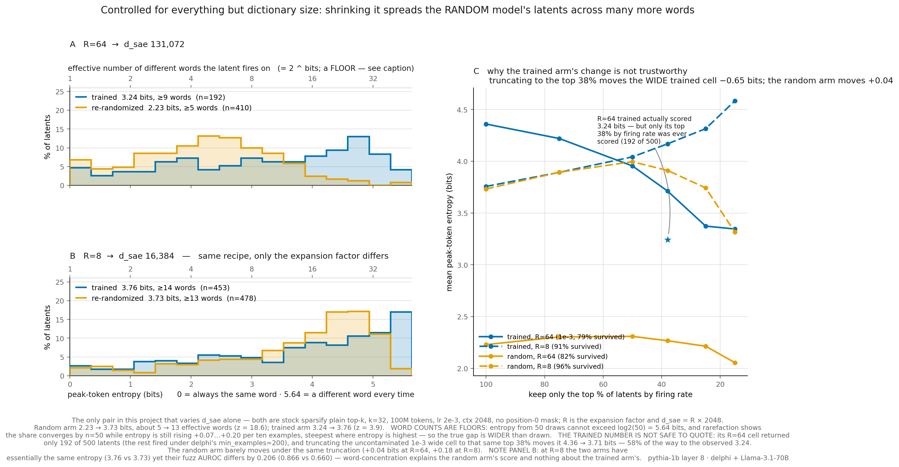

Research Log · Mechanistic Interpretability
Flipped Tuned Lens
Training per-layer affine maps on Gemma-2-2B that decompose residual-stream activations into an embedding-inherited part and an in-context part — and asking what that decomposition buys us for probing and sparse dictionaries.
The through-line
It all starts with one object: a linear map P that predicts a layer's activations straight from the token embedding — a "flipped" tuned lens (a normal tuned lens goes hidden → logits; this goes token → hidden). Everything downstream is a different question asked of P.
First I studied what P fails to reconstruct — the in-context residual r = h − P[token] — as the interesting signal (day-of-week geometry, truth directions). Then I used what P predicts to residualize sparse autoencoders and ask whether removing the token-predictable part yields less trivial, more abstract features. The map is the spine of the whole project.
The flipped tuned lens & reconstruction error
Built the core pipeline — cache Gemma-2-2B activations, train a linear map token → activation across layers, and dissect where it reconstructs badly. First look at the residual error as signal, not noise.
The tuned lens (Belrose et al. 2023) learns an affine probe from each layer's hidden state to the output distribution, showing hidden states are decodable moving predictions. I flipped the direction — predict the hidden state from the static token embedding. If a large part of the residual stream is just a linear image of token identity, that part carries no in-context computation, and the interesting, context-dependent signal is exactly the residual the map can't explain. Charting error by token and by position is the first measurement of how much of layer 13 is token-static vs. contextual.
Experiments
- extract.py + train.py: cache activations, train the linear map; swept learning rates, settled on lr=0.01; extended to multiple layers.
- analyze_err.py: decomposed reconstruction error by token and by position in text — the first "which tokens does the linear lens fail on?" question.
- heatmap.py: per-layer error heatmaps, normalized vs not.


Day-of-week geometry
Zoomed into a concrete concept — days of the week — and asked how the model geometrically arranges them. PCA of day embeddings / activations, mean-only projections, and the first hints of a circular structure.
LLMs hold linear representations of space and time (Gurnee & Tegmark 2023), and days-of-week are the canonical case where the representation is not a single line but a circle — later shown to be an exact ring used for modular arithmetic (Engels et al. 2024). Days are a clean, closed, 7-element concept: an ideal probe for what the in-context residual geometry looks like once the token-static part is stripped. PCA on day tokens tests whether the ring lives in the raw activation or emerges only in the residual.
Experiments
- days.py / days2.py + pca.py: PCA over day-of-week tokens; "means only" plots to strip within-class noise; PC1–2 vs PC2–3 views; directional arrows.
- End of week, pivoted from looking at the circle to probing for it — decomposing into h, ĥ, and residual.


Circular probes → Geometry of Truth
Two connected probing threads. First, fit an explicit circular probe to day representations (does the model lay days on a ring?). Then pivoted to the Geometry of Truth setup — training truth probes on cities and testing cross-dataset generalization.
A PCA picture is suggestive but not a claim. A probe that explicitly fits a circle tests whether the ring is genuinely recoverable as a low-dimensional linear structure, following the multi-dimensional-feature framing of Engels et al. (2024). Truth is the next, subtler contextual concept: the Geometry of Truth (Marks & Tegmark 2023) shows a linear "truth" direction exists but is easily confounded, and their negation / cross-dataset transfer is the standard test of whether a probe found truth or a surface correlate — which sets up the confound stress-test in Week 4.
Experiments
- circular_probe.py / circular_probe2.py: closed-form (lstsq) and gradient-descent fits on OpenWebText activations, with early stopping.
- geometry_of_truth_notes.md: distilled the Geometry of Truth paper (mass-mean probing, the MCI misalignment hypothesis).
- probe_truth.py / probe_cross_dataset.py: truth probes per layer, on mean vs last-token activations, regularized (C=0.1); train on cities → test on neg_cities.


Confounded truth datasets → weight-sparse hypergraphs
Pushed the truth work into a 7×7 probe grid (layers × representation type: embedding / residual / full) with deliberately confounded datasets, to test what the probe really keys on. Then a hard pivot: "atoms of discourse" — treating weight-sparse embedding dimensions as hyperedges over tokens and clustering them.
The Geometry of Truth's core lesson is misalignment from correlational inconsistency — a probe can score high while keying on a spurious correlate. The 7×7 grid over embedding / residual / full with deliberately confounded datasets is exactly the "is it reading truth or the confound?" test, and asks where the contextual signal lives — reconnecting to the embedding-vs-residual split. The pivot: "atoms of discourse" (Arora et al. 2018) show embeddings are sparse superpositions of a few semantic atoms, and weight-sparse transformers (Gao et al. 2025) give a model whose embedding dims are already sparse ≈ SAE codes — so the atoms can be read straight off the weights as a hypergraph, no SAE training needed. This nudged the project from probing toward sparse dictionaries.
Experiments
- probe_grid.py: 7×7 grid over confounded cities / neg_cities variants.
- Cloned OpenAI's circuit_sparsity; built weight_sparse.py — a {dim: tokens} hypergraph → token-token graph → Louvain communities, with hub-filtering and byte-fragment removal.


SAE training infrastructure
Built out real SAE training and validated it before trusting any interpretability result — JumpReLU SAEs with L0 / sparsity-coefficient sweeps, seed-stability checks, and convergence at increasing token budgets (150M → 300M → 600M).
To ask the real question — does removing the token-static part change the dictionary of features? — I first need SAEs I can trust. SAEs decompose activations into monosemantic features, but they're famously sensitive to training choices, so I built on the two sparsity-control lines that made them reliable: JumpReLU (Rajamanoharan et al. 2024) and TopK (Gao et al. 2024). Seed-stability and reconstruction-sparsity sweeps come before any interpretability claim — you can't trust a result built on an untrusted SAE.
Experiments
- JumpReLU SAEs with and without a sparsity sweep; sweep over L0 and the sparsity coefficient; seed SAEs for stability; convergence at coeff = 1.0.
- Effective-rank check on GPT-2's embedding matrix.

Residual-SAE triviality — the main investigation
The central question: does an SAE trained on the residual r = h − P[token] learn fewer "trivial" single-token features than one trained on the full h? Trained matched full vs residual BatchTopK SAEs (16k feats, k=64, 50M tokens), built neuronpedia-style dashboards, and measured triviality carefully.
SAE dictionaries are cluttered with "trivial" single-token detectors that arguably reflect tokenization, not computation. If much of layer 13 is a linear image of the token (my map P), then training the SAE on the residual r = h − P[token] should spend capacity on contextual structure and waste fewer features on token identity. This is the project's central hypothesis — and the same motivation as Tokenized SAEs (Dooms & Wilhelm 2025), which adds per-token biases to peel token reconstruction off feature reconstruction.
Result: NULL on triviality The durable output was the methodology, not the headline.
Findings
- Two artifacts faked the effect: (1) peak-sampling bias — features look single-token only at their strongest activations, inflating apparent triviality ~16×; (2) firing-frequency confound — rare features are intrinsically more trivial, and the residual dictionary just skews rarer. Both vanish under controls → trivial features are ~1%, not ~16%, and residualization does not reduce triviality.
- Reconstruction accounting (eval_fvu.py): the map explains 55% of Var(h); composite (map + resid SAE) ≈ full SAE on raw h (FVU 0.1445 vs 0.1426) → offloading the token-predictable part buys zero reconstruction at matched budget.
- Metric lesson: measure triviality across the whole activation range (activation-weighted), never just top-K peaks, and always within firing-frequency bins.


Hybrid / outbias maps + the LLM judge
Nathan's fix turned the null partly positive: instead of a frozen map, train the map jointly with the SAE end-to-end on h. This gives better reconstruction at matched sparsity AND a less trivial dictionary. Then an LLM judge tested whether "less trivial" actually means "more abstract."
A frozen, pre-fit map is a blunt instrument; letting the map train jointly with the SAE (end-to-end on h) lets the two coordinate — the learned-per-token-bias move of Tokenized SAEs (Dooms & Wilhelm 2025). But word-count "triviality" only measures lexical spread — it can't separate a genuinely abstract feature (e.g. "negation") from noise that happens to fire on many words. Auto-interpretability with an LLM judge — OpenAI's neuron-explanation recipe (Bills et al. 2023) and Anthropic's Scaling Monosemanticity (Templeton et al. 2024) — is the standard way to score feature quality, so I pointed it at abstractness.
Positive: reconstruction + de-trivializationNull: abstractness
Findings
- Hybrid (joint) training: FVU on h 0.1426 → 0.1376; peak single-word triviality ~halved (15.7% → 9.2%). The frozen map is a wash — joint training is the active ingredient. Sweep over k=16…256: hybrid wins at every k (~10–15% fewer active features for equal reconstruction).
- Map comparison: the jointly-trained map is a worse standalone predictor (R² 0.551 → 0.496) but a "better teammate" — it under-commits (shrinks to ~85% norm, rotates ~24°) to leave the SAE an easier residual to sparse-code.
- outbias ablation: the de-trivialization comes from the reconstruction target (h − P), not the encoder input.
- LLM judge (2832 features, blind): breadth ↑ significant, but abstractness flat and coherence ↓. Level-5 abstraction is ~empty for all SAEs → L13 features top out at topic/frame, never sycophancy-like abstraction. So the map buys broader lexical spread, not richer meaning.


The SAE zoo — one glossary for the recurring variants
| full | Baseline: SAE trained directly on the activation h. |
| resid | SAE trained on the residual r = h − P[token], with the map frozen. |
| hybrid | Encoder sees the residual; map is trained jointly with the SAE, reconstructing h end-to-end. |
| outbias | Encoder sees full h; the map is added only at the output. Isolates "input vs target" — closest to Tokenized SAEs (arXiv:2502.17332). |
Later reframed as the "skip-embed" family (pretrained-skip / residual-encoder / raw-encoder), vs a plain top-k SAE.
Validating the judge — a written rubric & a human study
A null on abstractness is only trustworthy if the judge is trustworthy. So I made the rubric explicit, hand-labeled a blinded, SAE-balanced validation set myself, and compared human vs judge axis-by-axis before re-running the full batch.
An LLM judge is only evidence if it agrees with humans — Scaling Monosemanticity (Templeton et al. 2024) validates its auto-interp scores against human labels for exactly this reason. Before trusting a null on abstractness across three SAEs, I needed a written, reproducible rubric, a blinded human-vs-judge agreement check, and a held-out re-validation so any rubric fix isn't graded on the features it was tuned on.
Experiments
- Written rubric (rubric_written.md/html/pdf): a coherence gate (1–5) that gates an abstractness ladder (0–5: exact spelling → one word → topic → role/frame → abstract idea), grounded in the Scaling-Monosemanticity recipe but pointed at abstractness instead of specificity.
- Human validation (annotate.py → human_val.json vs judge_val.json): agreement strong on coherence, breadth, and the "no-pattern" floor; weakest on abstractness.
- Bug found & fixed: the judge under-rated abstractness on subword-split tokens (it saw Cr|umble as unrelated fragments). Added a "read the whole word/construction" rule, then re-validated on a held-out seed so the fix isn't measured on the features it was tuned on.
- Re-ran the full 2832-feature batch judge with the revised rubric (judge_ratings.json).

Reproducible pipeline — HuggingFace & a 200M retrain
Rebuilt the whole pipeline to be portable: generate activations at run-time instead of caching giant tensors, and push trained SAEs + maps to HuggingFace so any fresh GPU pod can pull them. Retrained all four variants at 200M tokens.
Not a science week — a prerequisite one. The results so far lived on one specific cached box; scaling to more SAE variants, more tokens, and the coming probing experiments needed a portable pipeline (runtime activations, HuggingFace-hosted checkpoints, one-shot pod setup) so any GPU could reproduce and extend the work. Infra debt paid down before the next round.
Experiments
- activations.py (run-time activation generation), fit_map.py, hf_io.py (pull/push to andreayc/gemma2-2b-linearmap-saes), and setup.sh for a one-shot fresh-pod install — no more network volume required.
- Retrained full / resid / hybrid / outbias at 200M tokens on the new pipeline; re-ran the pooled dictionary-triviality plot on the 200M SAEs.
- r2_by_layer.png: how much of the residual stream the linear map explains at each layer — the map's reach across depth.


A new lens: k-sparse probing (Temporal-SAE protocol)
Moved from "are features trivial?" to "do the features encode useful concepts?" — reproducing the probing protocol from the Temporal-SAE paper (arXiv:2511.05541, Fig 3): how well can a k-sparse probe on SAE features recover a semantic label (topic/domain) vs a syntactic one, and does skip-embed help?
The judge said the map makes features broader but not more abstract — leaving open whether the decomposition makes them more useful. Sparse probing (Gurnee et al. 2023) is the standard way to measure how much task-relevant information a small set of features linearly carries, and the Temporal-SAE paper (2025) turns it into a clean semantic-vs-syntactic benchmark. Reproducing their Fig-3 protocol on my skip-embed SAEs asks the sharper question: does moving token-static structure into the map free up features that better encode concepts (topic / domain), not just spread over more words?
Experiments
- probe_sparse.py → probe_v2.py (GPU one-vs-rest logistic probes, standardized features, dense ceiling) → probe_paper.py (a faithful replication of the paper's quiver_arrows feature selection + single multiclass fit, in their metric).
- Datasets: MMLU (57 subjects) and FineFineWeb (the paper's 10 web domains); tasks split into semantic vs syntactic.
- Signal so far: skip-embed encoders lift semantic probe accuracy; a fixed metric/scaling bug (unscaled dense probe underfit) was traced with Nathan and fixed with StandardScaler + subsampling, making dense a real ceiling again.
- New thread opening: can skip-embed SAEs distinguish a trained transformer from a randomly-initialized one?


Trained vs. random transformers — and the null that makes the number mean something
Opened the new thread: can skip-embed tell a trained Gemma from a randomly-initialized one? The cheap proxy came back a null — a random transformer's layer 13 is as "contextual" as a trained one by raw variance. But measured against a matched-covariance Gaussian null, the picture reversed: after subtracting P[token], a random model's residual is indistinguishable from correlated noise (−3.2%) while a trained one beats that floor by 37.3%.
Heap et al. (2025) report that SAEs on randomly initialized transformers score just as interpretable as on trained ones — retitled from "SAEs Can Interpret Randomly Initialized Transformers" to "Automated Interpretability Metrics Do Not Distinguish Trained and Random Transformers." If that holds, auto-interp is not measuring what anyone thinks it measures. My hypothesis for why: the randomization keeps the embedding table, so the dictionary is dominated by token-identity structure that survives randomization completely. Skip-embed factors exactly that out — so it should make the distinction reappear, turning the project's earlier nulls into the premise of a validity result rather than a disappointment.
Experiments
- Randomization verified before anything was trained on it — Heap's recipe (per-tensor Gaussian matched to each trained tensor's own mean and std, embeddings included). 288 tensors re-drawn, correct for Gemma-2-2B; max|dim var| only 1.48× the mean, confirming the massive-activation dims that trained Gemma has are gone.
- context_var.py (Tier 0, ~1 GPU-hour): contextual variance fraction via a full per-token lookup table. A null — lookup R² 0.2743 trained vs 0.2877 random. The random model is marginally more contextual. Random attention is diffuse, so every position becomes a broad random mixture of its context; that generates plenty of context-dependent variance, just unstructured. So there is no cheap proxy — the question has to be answered with SAEs.
- gauss_null.py (Tier 1): the fix. Raw FVU is confounded — a trained residual stream is anisotropic and easy to sparse-code, a random one is closer to isotropic and intrinsically hard. Comparing each arm to its own matched-covariance Gaussian removes that.
Percent below own matched-Gaussian null, k=64: plain SAE 47.1% trained / 14.5% random; skip-embed 37.3% / −3.2%. The load-bearing cell is random/plain = 14.5% — a plain SAE finds genuine non-Gaussian structure in a randomly-initialized transformer, which is quantitatively why SAEs "look interpretable" on random nets. The same SAE with P[token] subtracted finds zero. The two differ by exactly one thing, so for a random transformer all exploitable structure is token-static. Also worth quoting on its own: an SAE reconstructs pure Gaussian noise to FVU 0.53 at k=64 — raw FVU numbers are meaningless without that floor.
{kind=link}

Scaling to the paper's recipe — and watching the effect erode
Heap's headline did not replicate in my pipeline, so the mentor triage was: bad metric, undertrained SAEs, or a genuine non-replication. Retrained the full 2×2 at the paper's scale (100M tokens, 73,728 latents) and swept LR. Undertraining is ruled out — but every cell rose, the random one most, and both gaps narrowed. The effect is real and scale-sensitive.
A non-replication is only interesting if it survives the obvious objections. Mine used 20M tokens and a 16k dictionary against the paper's 100M and R=64; a mentor's first question is whether my random-arm SAEs simply hadn't trained long enough to find the structure. That is a testable claim — score auto-interp against training tokens and see whether the random arm is still climbing at 100M. And a "% below own null" number is a property of the (model, SAE) pair, not of the model, so the nulls had to be refit at the new config before any cross-arm percentage was quotable.
Experiments
- LR sweep closes the first branch (eval_lr_sweep.py, random arm, 20M each): 1e-4 / 4e-4 / 1e-3 → the project default wins on every metric. The load-bearing number is alive% = 100 at 4e-4, which kills the "the sampler drew from a mostly-dead dictionary" story outright — the dictionary is fully alive by 20M.
- The 100M fleet — six runs on one 6×L40S pod, {trained, random} × {plain, skip-embed} plus the LR arm, with frozen milestone checkpoints every 20M so auto-interp could be plotted against training tokens.
- Held-out eval, and a correction. Final-batch FVU suggested the random arm had improved a lot (0.379); held-out on 2M fresh tokens said 0.4725 — no improvement. Never compare a training-batch FVU to a held-out one.
- An unplanned discriminator. The train-vs-held-out gap is wildly asymmetric: trained/plain +0.004, random/plain +0.094. A 73,728-latent SAE appears to memorize a random transformer's activations while genuinely generalizing on a trained one.
Full null table at k=32 / R=32 / 100M, % below own null: trained 53.3% plain / 42.0% skip-embed; random 25.4% / 6.6%. Both random cells rose (14.5→25.4, −3.2→6.6) — a better-trained SAE extracts more genuine structure from a random transformer, so the Heap effect strengthens with better SAEs. The earlier categorical framing ("a matter of kind, not degree") does not survive; what does is the asymmetry: skip-embed removes 74% of the random model's above-null structure but only 21% of the trained model's. And that 21% is essentially config-independent across two very different setups (20.8% vs 21.2%), which is evidence it measures a real property of trained Gemma's layer 13 rather than an SAE artifact.
{kind=link}

The week the result flipped twice — two bugs in a checkpoint converter
Ran the paper's own pipeline (EleutherAI delphi, Llama-3.1-70B judge). At small n it agreed with me; at proper n it reversed and said "no gap," which would have meant Heap replicates and my whole pipeline was the disagreement. Chasing that down found two bugs in my SAE format converter. Corrected, delphi agrees with my pipeline cell by cell. The mis-converted SAE had been manufacturing interpretable features out of a random transformer.
If my pipeline and the paper's disagree, one of them is wrong, and it matters enormously which. The honest move was to run their code on my SAEs and see. When that produced "no gap," the live hypothesis became that my own metric implementation was the problem — the mentor had previously dismissed that branch, and this was evidence to reopen it. Instead the disagreement turned out to live in a 30-line conversion function nobody had reason to suspect.
Experiments
- The decisive 2×2 in my own pipeline (520 latents/cell, ~1,955 explanations, ~3,887 scoring calls): trained/plain 0.754 fuzz vs random/plain 0.632. A free pre-scoring diagnostic came with it — the rate at which the explainer says "no clear pattern": 17.1% trained vs 46.0% random, and skip-embed pushes the two arms in opposite directions (17.1→15.4 vs 46.0→54.9).
- delphi at n=35/23 said +0.075. At n=195/161 it said −0.005. The trained arm barely moved; the random arm went 0.609 → 0.704 once measured on 161 latents instead of 23. The first number was small-n noise.
- Two bugs, found by validating a hand-written cache writer against delphi's archived one — they agreed on only 15% of firings. (1) b_dec applied twice, since sparsify's encode already subtracts it; a constant offset on all 73,728 pre-activations changes which 32 win the top-k. (2) a missing decoder-norm fold — the decoder is not unit-norm here (1.3–1.7), so omitting it re-ranks latents. Why it was never caught: the converter verified its own arithmetic by hand instead of calling the library's encode(), so it passed at 1e-6 while delphi computed something with 0.15 Jaccard against the truth.
- The ablation that assigns blame (2×2 over {broken conversion, true SAE} × {BOS, no BOS}): the conversion effect is +0.132 to +0.206; the BOS effect is −0.059, i.e. the opposite direction. The BOS mismatch had been partially masking how much the conversion inflated random-arm scores.
Corrected, delphi and my pipeline agree cell by cell to within ~0.03 (trained/plain 0.754 vs 0.781; random/plain 0.632 vs 0.632). Heap et al. does not replicate inside delphi either — the earlier "it replicates" was the defects. The mechanism is measured, not inferred: the broken conversion halved the surviving latents and collapsed the dictionary toward a few near-always-on latents, which have crisp, describable surface behaviour a judge can characterise. It manufactured genuinely interpretable features out of a random transformer. Skip-embed's advantage is confirmed by a third instrument (difference-of-differences +0.051, z=3.24) — but only on fuzz; detection is not significant, and that limit should be stated.
{kind=link}

{kind=link}

Pythia — the Gemma positive does not carry over
Killed the standing "Gemma is not Pythia" caveat by rerunning on the paper's own model family, this time training natively in sparsify so the conversion bug class is structurally absent. The headline is neither "replicates" nor "doesn't" — it is frequency. And skip-embed's Gemma advantage reverses sign on Pythia.
Every result so far was one model, one seed. Heap's suite is Pythia, so the cleanest way to test whether my non-replication is about my setup is to use their model at their recipe (R=64, k=32, 100M tokens). Training skip-embed natively in sparsify needed a trick rather than a converter: attach a child module whose output is r = h − P[tok], invoked from a forward hook, so layers.8.skipembed becomes a real hookpoint and both stock sparsify and stock delphi work with no format conversion at all. Given what Week 13 cost, avoiding conversion entirely was the design goal.
Experiments
- Randomization verified first, 20 gates — and one Pythia-specific trap: tie_word_embeddings is False on Pythia but True on Gemma, so embed_in and embed_out are separate tensors and both must be re-drawn. A Gemma-recipe copy-paste would silently leave a trained unembedding inside a "random" model.
- A proof the FVU story is real (fvu_converted_sae.py): in delphi's own regime the trained arm's mis-converted SAE reconstructs 4× worse than predicting the mean (FVU 3.951), and its top-32 set overlap with the true SAE is 0.0000 — not one token in 512k. Its "features" were not features of any trained SAE.
- Pythia L8, four delphi cells. Naive per-latent AUROC at LR 1e-3: trained 0.626 vs random 0.808 — a reversal, opposite in sign to Gemma. The LR 2e-3 cell gives gap≈0 but its trained arm returned only n=192, a selection artifact rather than a replication.
- The mechanism, measured. Per-latent AUROC against firing count: trained Spearman +0.617 (bottom seven deciles sit at chance, top decile 0.884); random −0.012, flat at ~0.81 in every decile. Median firings 459 trained vs 2,482 random. The naive mean was comparing two different frequency mixtures.
- Skip-embed on Pythia: ΔΔ is −0.030 (z=−2.0) at the clean LR, against Gemma's +0.051. Fair statement: it fails to help on Pythia and may slightly hurt.
Fuzz AUROC across all four Pythia random cells: 0.808, 0.819, 0.826, 0.821. A range of 0.018 across two learning rates × two architectures — one of which deletes 75% of its own variance. The trained arm ranges 0.606–0.841, mostly selection. Whatever makes random-network SAE features describable is invariant to everything tried, and it does not live in the variance. That sentence is what set up the following week.
{kind=link}

{kind=link}

It is dictionary size — and the mechanism is single-word detectors
A temporal SAE flipped the sign on Pythia (+0.175) — but the mentor-requested control flipped it identically without the temporal loss, so six candidate causes stayed bundled. Training one stock sparsify SAE at d_sae 16,384 collapsed all six to one: dictionary size. Then measured why: a wide dictionary lets a random transformer spend one latent per word, and those single-word latents are honestly describable — so the metric was working correctly all along.
The mentor's framing was the right one: before piling on architectures, establish whether the original interpretability result is real. My own cells were already evidence it was not stable — the trained-vs-random gap swung from −0.213 to +0.206 across choices that should not matter, with z-scores of 24–32. Precise and irreproducible is the signature of a systematic artifact, not of a finding. So the work turned from "which architecture wins" to "what is this number actually measuring."
Experiments
- Temporal SAE, then its control. The T-SAE gave trained 0.801 vs random 0.626 — the first positive on Pythia. But their own train_baseline.py, identical apart from having no contrastive term at all, gave +0.180 against the temporal +0.175. And the Matryoshka split was null both ways (+0.176 high-level vs +0.175 low-level). Not the temporal loss.
- The isolating run. A stock sparsify top-k SAE at R=8 — no BatchTopK, no Matryoshka, no contrastive term, ctx 2048, no position-0 mask — gave +0.206, flipping harder than the temporal SAE. Sorted by d_sae the pattern is flat and crosses codebases: the random arm sits at 0.808–0.826 in all four wide cells and 0.626–0.660 in all three narrow ones. The random arm is what moves.
- A survivorship artifact, and it is the cell the literature would quote. delphi scores arange(N) but only writes a file for latents clearing min_examples=200. The one cell reproducing Heap (+0.015) had a trained SAE returning 192 of 500 latents — its healthiest third — against the random arm's 410. Since trained-arm AUROC rises with firing rate, truncating a clean cell to the same 38% moves it 0.626 → 0.779, while the random arm is unmoved. Frequency standardization cannot repair it: reweighting fixes the observed, and the missing latents have no scores at all.
- The mechanism (token_purity.py): for each latent, how often its 50 activating examples peak on the same word. Random arm 0.509 → 0.184 (z=43) as the dictionary shrinks; 10.5% → 2.3% pure single-word detectors; peak entropy 2.34 → 4.55 bits, about 5 effective words to 23. Controlled on the one pair varying only d_sae, the random collapse survives at z=14.1.
- Controls the claim needed. Purity is measured on delphi's 50 sampled windows, so: every latent everywhere gets exactly 50 (structural, no small-sample bias); the contrast is identical among each latent's strongest and weakest firings (0.348 vs 0.347); and rarefaction shows the share has converged by n=50 while entropy has not — so entropy word-counts are floors, which biases against the result.
Heap's randomization keeps the embedding table, so token identity is close to the only structure a random Pythia has left. A 131,072-latent dictionary has room to spend roughly one latent per token, and a latent firing on ' moment' in 50 of 50 windows is honestly describable and trivially scorable — a random non-activating window almost never contains the word. So delphi scoring the random model 0.81 is the metric working correctly, not failing. "Interpretable" here largely means "recognizes a word," and dictionary width controls how much of that a random model can express. Heap et al. ran Pythia-1B at R=64 — precisely the wide regime, a hyperparameter they never varied. The honest limit: at 16,384 the two arms have identical purity (0.298 vs 0.298) while their AUROC differs by 0.206, so this explains the random arm and nothing about the trained one.
{kind=link}

{kind=link}

{kind=link}

References
- Belrose et al. (2023) — Eliciting Latent Predictions from Transformers with the Tuned Lens. arXiv:2303.08112.
- Gurnee & Tegmark (2023) — Language Models Represent Space and Time. arXiv:2310.02207.
- Engels et al. (2024) — Not All Language Model Features Are One-Dimensionally Linear. arXiv:2405.14860.
- Marks & Tegmark (2023) — The Geometry of Truth: Emergent Linear Structure in LLM Representations. arXiv:2310.06824.
- Arora et al. (2018) — Linear Algebraic Structure of Word Senses, with Applications to Polysemy ("atoms of discourse"). arXiv:1601.03764.
- Gao et al. (2025) — Weight-sparse transformers (circuit sparsity). arXiv:2511.13653.
- Rajamanoharan et al. (2024) — Jumping Ahead: Improving Reconstruction Fidelity with JumpReLU Sparse Autoencoders. arXiv:2407.14435.
- Gao et al. (2024) — Scaling and Evaluating Sparse Autoencoders (TopK). arXiv:2406.04093.
- Dooms & Wilhelm (2025) — Tokenized SAEs: Disentangling SAE Reconstructions. arXiv:2502.17332.
- Bills et al. (2023) — Language Models Can Explain Neurons in Language Models. OpenAI.
- Templeton et al. (2024) — Scaling Monosemanticity: Extracting Interpretable Features from Claude 3 Sonnet. Anthropic.
- Gurnee et al. (2023) — Finding Neurons in a Haystack: Case Studies with Sparse Probing. arXiv:2305.01610.
- Temporal Sparse Autoencoders (2025) — Leveraging the Sequential Nature of Language for Interpretability. arXiv:2511.05541.
- Heap et al. (2025) — Automated Interpretability Metrics Do Not Distinguish Trained and Random Transformers (originally "Sparse Autoencoders Can Interpret Randomly Initialized Transformers"). arXiv:2501.17727.
- Sanity Checks for Sparse Autoencoders (2026) — Random-direction SAE baselines match trained SAEs on interpretability and on sparse probing. arXiv:2602.14111.